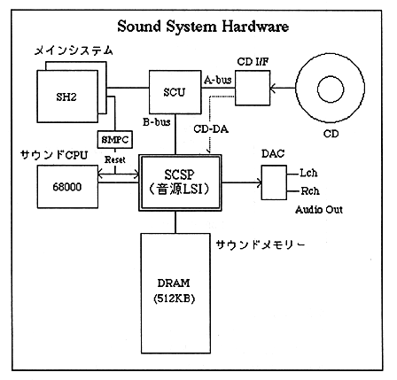

The sound system is centered around the sound source LSI, and is connected to a sound CPU, 512KB sound memory, main system and CD interface. The main system can access the sound memory and all SCSP IO space via the SCU, and can control the stop (reset) and restart (reset release) of the sound CPU via the SMPC.
The most important of these is the sound memory, which controls all aspects of the sound system, including sound driver execution, data management, sound source data storage, and communication between systems.